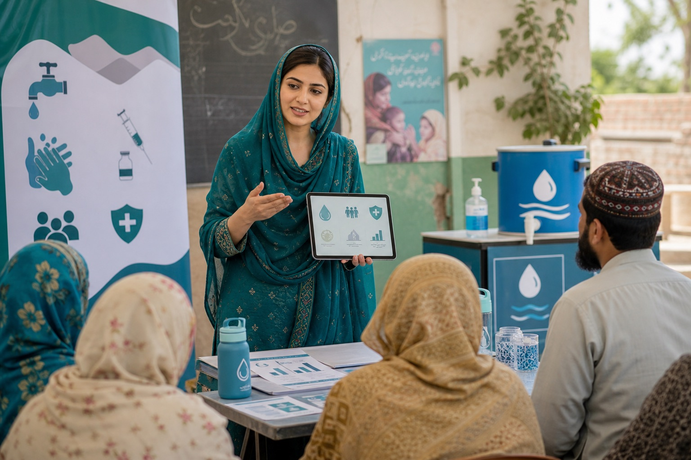

MPH
وبائی امراض کیسے پھیلتے ہیں؟
6:42
کمیونٹی میں وبا کیسے پھیلتی ہے؟
بیماری کیسے پھیلتی ہے، prevention کیسے ہوتی ہے، اور گھر والے کیا کر سکتے ہیں۔
یہاں ماسٹرنگ ایم پی ایچ اردو اور ماسٹرنگ ایم ایچ اے/ایم بی اے اردو کی مختصر، واضح ویڈیوز ملیں گی۔
نئے سیکھنے والوں کے لیے
اپنا ٹریک منتخب کریں اور چار منتخب ویڈیوز ترتیب سے دیکھیں۔
نئی اردو ویڈیوز
روزمرہ صحت، عوامی صحت اور ہیلتھ کیئر مینجمنٹ کی ویڈیوز۔ تمام ۲۳۹ ویڈیوز تلاش کریں ←
بیماری کیسے پھیلتی ہے، prevention کیسے ہوتی ہے، اور گھر والے کیا کر سکتے ہیں۔
Revenue، costs، staffing، supplies اور service planning کا آسان تعارف۔
Rates، risks اور comparisons کو عوامی صحت کے context میں سمجھیں۔
Managers فیصلے کیسے کرتے ہیں، teams کیسے بناتے ہیں، اور communication کیسے بہتر کرتے ہیں۔
ماسٹرنگ ایم پی ایچ اردو
اس ٹریک میں بیماریوں سے بچاؤ، وبائیات، اعداد و شمار، health systems، environmental health اور public-health policy کو صاف اور آسان اردو میں سمجھایا جاتا ہے۔

ماسٹرنگ ایم ایچ اے/ایم بی اے اردو
یہ ٹریک health education سے آگے بڑھ کر یہ سمجھاتا ہے کہ health organizations کیسے چلتی ہیں: management، accounting، finance، marketing، HR، operations، strategy اور leadership آسان اردو میں۔
موضوعات
بچوں کی صحت، روزمرہ علامات اور بیماریوں سے بچاؤ کے بارے میں ویڈیوز۔
ویڈیوز دیکھیں ← 12 ویڈیوزبیماریوں سے بچاؤ، وبائیات اور معاشرتی صحت کے اسباق۔
اسباق دیکھیں ← 10 ویڈیوزصحت کی خدمات، مساوی رسائی اور پالیسی کو سمجھیں۔
اسباق دیکھیں ← 7 ویڈیوزخدمات، تربیت اور ہسپتال کے انتظام سے متعلق اسباق۔
اسباق دیکھیں ← 19 ویڈیوزمالی فیصلے، نقدی کا بہاؤ اور لاگت کا حساب۔
اسباق دیکھیں ← 10 ویڈیوزخدمات کی مارکیٹنگ، عملے کی تربیت اور ملازمت کے قوانین۔
اسباق دیکھیں ← 7 ویڈیوزقانون، اخلاقیات اور عملی فیصلوں سے متعلق منتخب اسباق۔
اسباق دیکھیں ←ہمارا اندازِ تدریس
YouTube اور social platforms کے لیے focused lessons، مگر substance کے ساتھ۔
English terms کو translate، unpack، اور South Asian context سے connect کیا جاتا ہے۔
Hospital، community، finance، اور management examples concepts کو usable بناتے ہیں۔
Health topics کو calm، evidence-aware، اور ذمہ دار انداز میں سمجھایا جاتا ہے۔
عوامی صحت کی سمجھ بھی، اور ہیلتھ کیئر لیڈرشپ کی مہارت بھی۔
Public health knowledge اور healthcare leadership skills کی اردو learning library بنائیں۔
YouTube پر سبسکرائب کریں